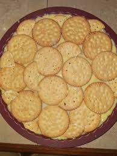
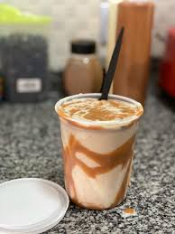

paso2-Después le agrega sal a gusto, se espera unos minutos
paso3-Al pasar los minutos se le agrega la harina hasta que quede de forma que se puede moldear
paso4-Al ya tener ma harina moldeables se agarra un puñado para darle forma de bolita
paso5-Después aplastar a poco a poco la masa con palmaditas suaves, y quedé la forma de un círculo
paso6-si hay lados desparejos se tienen que acomodar para que uniforme con lo demás
paso7-Al tener lista la forma se le puede frita o asada
asada
paso-8Se le cocina por ambos lados hasta que quede de bien cocida y con algunas manchas negras
frita
paso8-Se le mete en un sartén con aceite que tape toda la arepa
paso9-Se le hace un agujero en el medio paea después meterla en la sartén
paso10-Estara lista hasta que flote en el aceite o sobresalga
Torta Fria

Ingredientes
500 ml pudin de fresa
500 ml pudin de chocolate
500 ml pudin de vainilla
2 Paquetes galletas tipo María
Leche líquida para humedecer las galletas
A cocinar
Preparar el pudin de acuerdo a las instrucciones del empaque. Puedes estos sabores o los que desees. Si quieres puedes buscar mis recetas de pudin de chocolate y vainilla.
Colocar en una bandeja o refractaria alta una capa de pudin de vainilla
Luego colocar una capa de galletas previamente remojadas en leche líquida.
Alternar capas de galleta y los diferentes tipos de pudin.
En la última capa colocar la decoración al gusto. Refrigerar por unas 2 horas hasta que cuaje.
Chicha(bebida)

Ingredientes
1 t de arroz
4 t de agua
2 cdas azúcar
1 cdta sal
2 tazas leche fría
200 g leche condensada
1 cdta esencia de vainilla
Canela en polvo
hielo triturado
A cocinar
1.Coloque el arroz en un colador grande, y lávelo con agua corriente por un par de minutos.
2.Escúrrelo y colócalo en una olla con 4 tazas de agua, el azúcar y la sal.
3.Cocina tapado a fuego máximo, cuando hierva bájalo a fuego medio y cocina por 30min sin tapar. Cuela y deja enfriar.
4.Tritúralo en la licuadora junto con la leche, la vainilla la leche condensada y un poco de hielo triturado. Debe quedar una mezcla espesa y homogénea.
5.Para servir coloca en el fondo del vaso hielo triturado, vierte la chicha junto con un poco de leche condensada y canela en polvo. Cubre con hielo triturado